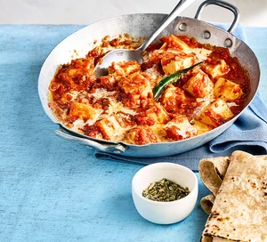

Paneer Makhani

Description
Hosting a dinner party? No Indian-themed meal or celebration is complete without paneer, and this cheesy delight is just the ticket
The first time I made this, it was the best actual thing I have ever cooked. No attempt has since matched it. I do this without nuts due to allergy.
Ingredients
- 2 tsp butter
- 2 tbsp vegetable oil
- 4 tomatoes chopped, or use a 400g can chopped tomatoes
- 1 tsp tomato purée
- 6-7 garlic cloves, roughly chopped
- 4-5 cardamom pods, roughly bashed
- 1 small cinnamon stick
- 1 bay leaf
- 4 cashew nuts, finely chopped and soaked in water until soft
- 1cm piece of ginger, peeled and finely grated
- 1 tsp red chilli powder, such as kashmiri mirch
- 1 chilli, sliced in half lengthways (optional)
- 250g paneer, cut into medium cubes
- 1 tbsp fenugreek leaves
- 1 tsp garam masala
- 80ml single cream, to serve (optional)
Steps
- Melt 1 tsp butter and 1 tbsp oil in a non-stick pan over a low-medium heat until sizzling (watch closely so the butter doesn’t burn). Add the tomatoes, tomato purée, garlic, cardamom pods, cinnamon stick and bay. Cover with a lid and cook for 10 mins over a medium heat, stirring occasionally. After 10 mins, remove from the heat, leave to cool, then remove the bay, cinnamon stick and cardamom pods.
- Once cooled, tip the mixture and the cashew nuts into a blender and blitz to a smooth paste. Set aside.
- Return the pan to a medium heat, add the remaining butter and oil and cook the ginger for a minute. Reduce the heat to low, add the chilli powder and stir for 2 mins. Tip in the tomato and cashew paste and cook for 5 mins more.
- Add the sliced chilli, if using, 1½ tsp sugar and the paneer. Mix well and cook for a few minutes more. Add the fenugreek leaves and garam masala. Mix well. Stir in up to 100ml water to loosen, then remove from the heat, swirl in the cream, if using, and serve.